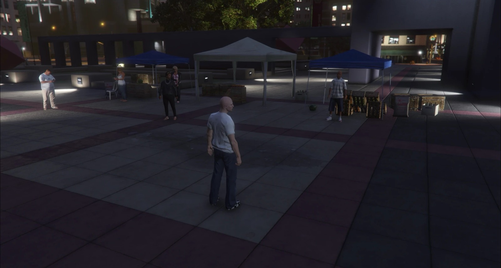
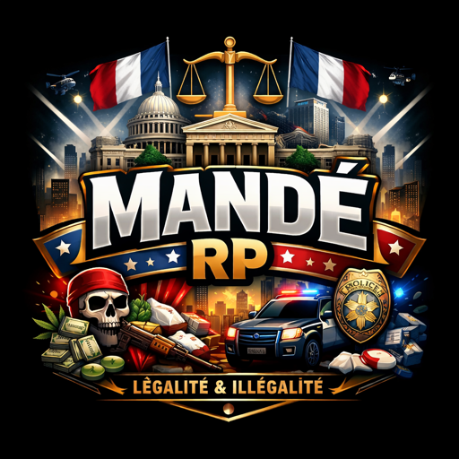
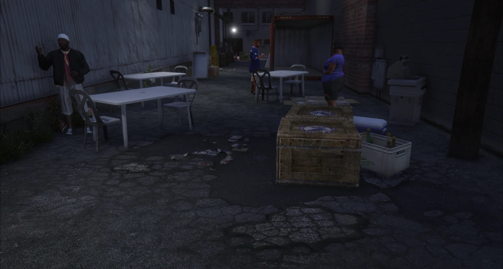
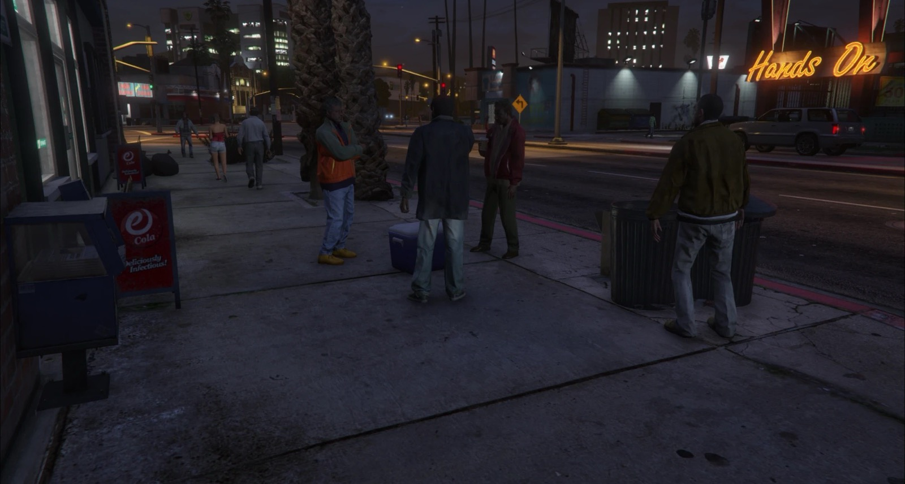
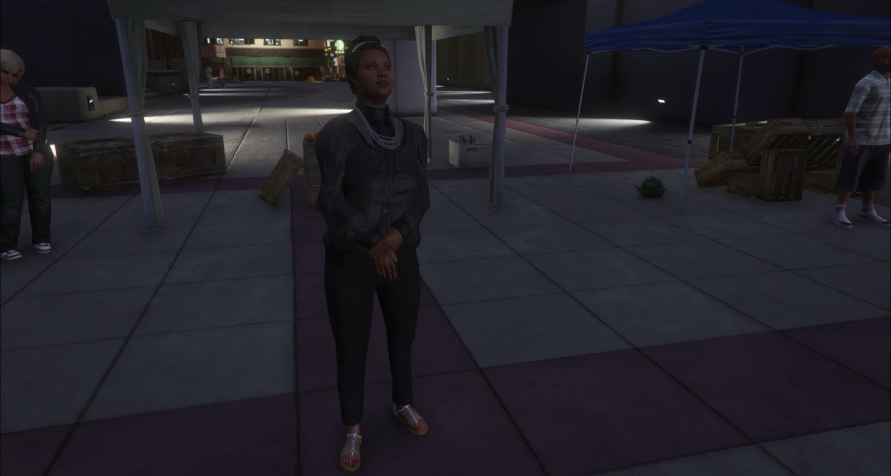
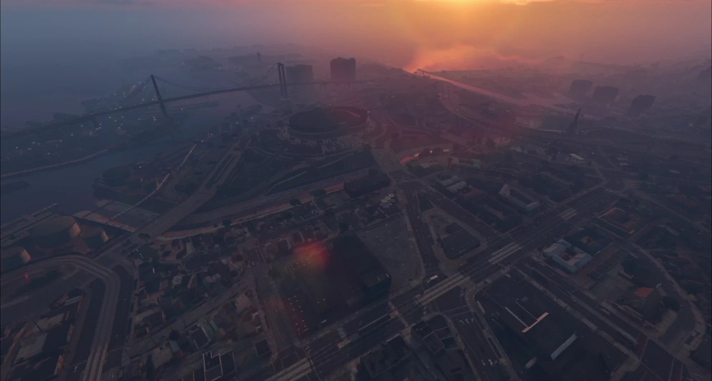
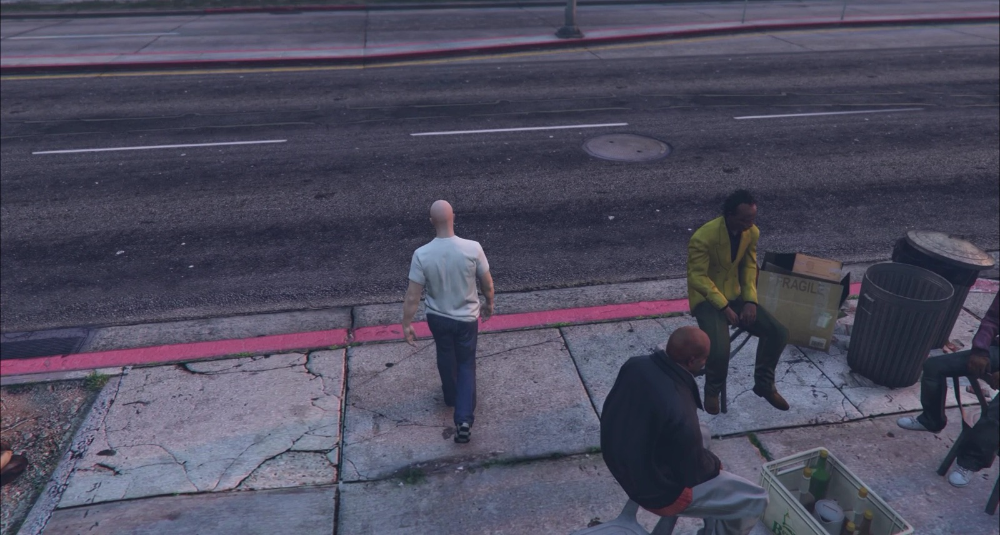
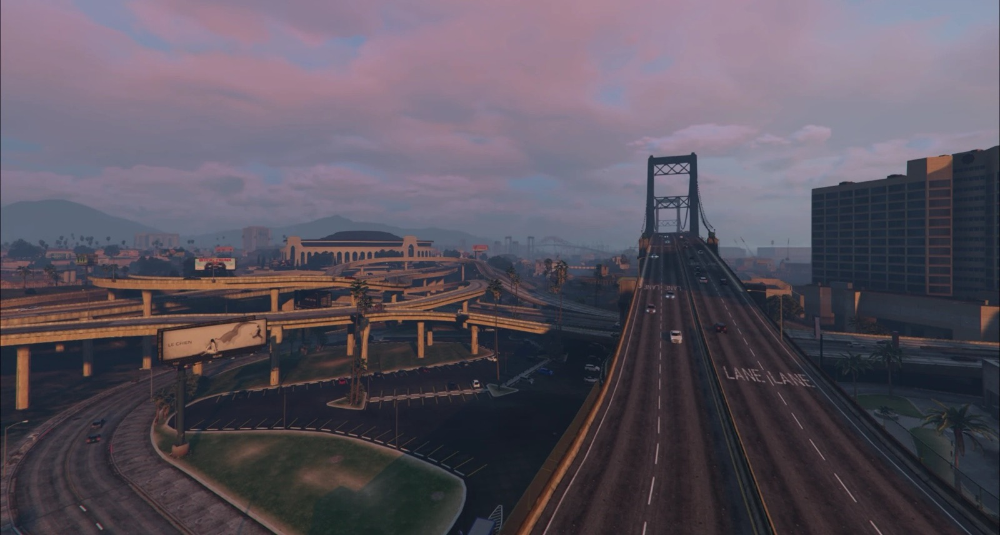
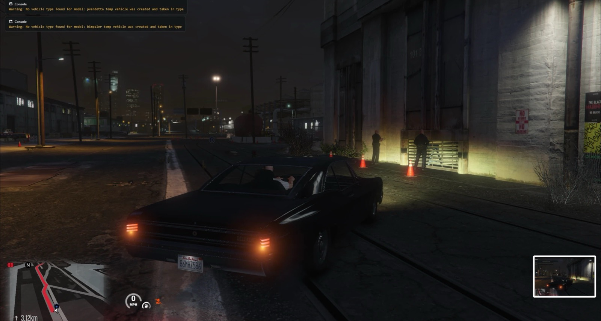
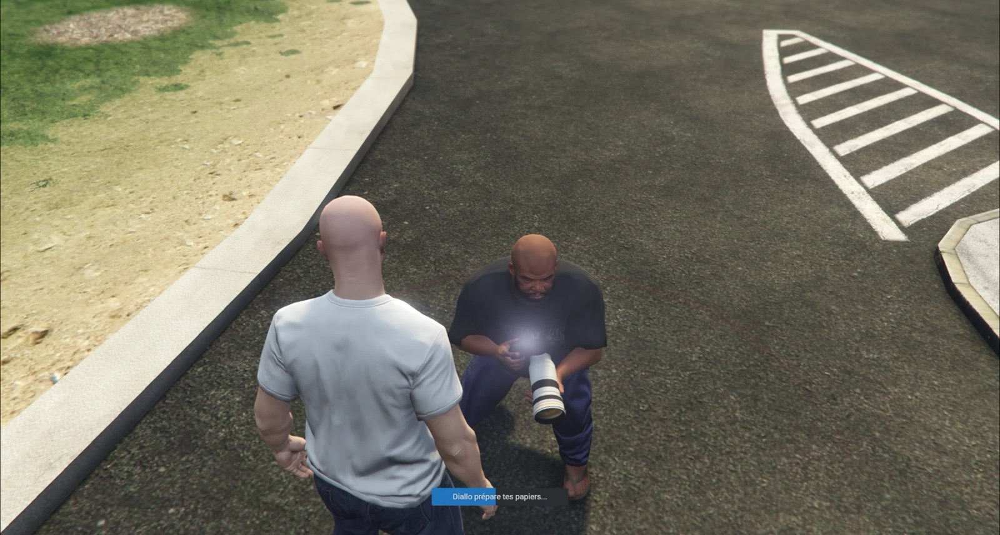

Le Marché central
Tantie Awa, ses étals et ses vendeurs. Le cœur de la ville, et ton premier travail : livrer ses marchandises dans toute la ville.
Pas de candidature, pas d'attente. Pose tes valises à l'aéroport, trouve un travail au marché, bois l'attaya au grin… ou écoute ce que racontent les vieux sur le port, la nuit.
Dans FiveM, cherche Mandé RP dans la liste des serveurs.

Duguba City, « la grande ville » en bambara, est une métropole fictive d'Afrique de l'Ouest francophone. Ici, on se retrouve au marché, au maquis et au grin, on paie avec son téléphone et on se débrouille comme on peut.

Tantie Awa, ses étals et ses vendeurs. Le cœur de la ville, et ton premier travail : livrer ses marchandises dans toute la ville.

Alloco, garba, poulet braisé, bissap bien frais. Le soir, tout Strawberry se retrouve à ses tables.

On y boit le thé, on refait le monde… et on y apprend des choses que la police ne sait pas encore.
Le mobile money de Duguba City, directement dans ton téléphone : envoie de l'argent à n'importe quel numéro, dépose ou retire chez les agents.
Ton histoire commence à l'Aéroport international de Duguba, avec une arrivée cinématique. Pas dans un appartement anonyme.
Interface, métiers, lieux et personnages en français, pour la France et l'Afrique francophone.




« À Duguba City, tu peux livrer pour Tantie Awa… ou travailler pour Bakary. Chaque choix a un prix. »
L'identité de Mandé RP, c'est la frontière entre le légal et l'illégal. Gagne ta vie honnêtement, ou prends des risques pour aller plus vite. La police et la douane veillent.

Chaque sortie des docks peut se terminer par un contrôle. Papiers en règle ? Coffre propre ? Ou un billet bien placé…

Des photos d'identité pour l'administration. Et, pour qui sait demander, des papiers « en règle ».
Il te faut une version PC officielle de GTA V (Steam, Epic Games ou Rockstar Games Launcher).
Télécharge FiveM gratuitement sur fivem.net, installe-le et lance-le une première fois.
C'est là que tout se passe : annonces, règlement, aide, recrutement. discord.gg/9pKNt6bmJ
Dans FiveM, cherche Mandé RP dans la liste des serveurs, crée ton personnage et lis le règlement. Bienvenue à Duguba City.
Oui. Mandé RP est en accès libre : pas de candidature ni d'entretien. Tu dois seulement accepter le règlement à ta première connexion.
Pas du tout. Le serveur est pensé pour les débutants : une arrivée guidée, des métiers simples pour commencer, et une communauté pour t'aider sur le Discord.
C'est fortement recommandé : le roleplay se joue surtout à la voix. Un micro correct suffit.
Oui, l'illégal fait partie de l'identité du serveur, avec ses conséquences : police, douane, prison. Respecte simplement les règles de la section « Légalité et illégalité » du règlement.
Non, jouer est gratuit. Pour soutenir le serveur, la boutique propose des abonnements VIP de confort (file d'attente prioritaire, personnages en plus, plaque personnalisée…), sans vente de monnaie du jeu, d'armes ou d'argent.